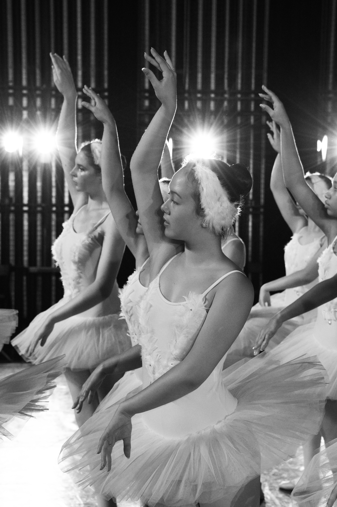

Je suis étudiante en première année de Global BBA à L'ESSEC Buisness School à la recherche d'un stage de trois mois en Juin 2020.
Découvrir ESSEC Business SchoolMes activités en dehors du lycée sont pour moi source d’épanouissement et d’équilibre.
Je pratique la danse classique à raison de cinq entraînements par semaines depuis 10 ans. Ce sport me demande de repousser sans cesse mes limites et requiert un sens artistique et de la rigueur. Mon esprit de compétition m’a permis d’être médaillée pendant six années consécutives au concours national de la scène française.
Pendant les vacances scolaires, je pratique des sports qui m’apportent des sensations fortes. Depuis quatorze ans, je pratique le ski alpin et l’année dernière, j’ai obtenu mon certificat de plongée.
Voyager me permet de sortir de ma zone de confort et de créer de nouveaux liens. A 14 ans, je suis partie pendant un mois dans une famille d’accueil américaine en Floride. Cette expérience m’a permis de perfectionner ma maîtrise de l’anglais et de m’immerger dans une culture différente.
Durant mon séjour, j’ai intégré une troupe de théâtre. Cela m’a amenée à me dépasser et j’ai dû faire appel à ma forte capacité d’adaptation pour m’intégrer à un groupe d’adolescents déjà établi et surmonter la barrière de la langue.
Avec détermination et courage, j’ai appris un script en anglais en moins de deux semaines. Défi relevé avec succès, qui s’est soldé par quatre représentations devant un public totalisant plus de mille personnes.
J’ai effectué mon stage de 3ème dans une société de conseil et d’ingénierie télécoms. Les critères de sélection de l’entreprise ont été guidés par mon projet professionnel; devenir commerciale à l’international.
Réaliser mon stage dans une PME m’a permis de découvrir différents départements d’une société et des métiers à la fois techniques et commerciaux. Au cours de ce stage, j’ai pu observer les processus de développement de logiciels, de vente de produits informatiques, et de gestion de la relation clients.
J’ai participé activement à la réalisation de tests utilisateur d’un logiciel destiné à la vente, à des opérateurs en Afrique. J’ai aussi effectué de la prospection à l’international, tâche ardue qui nécessite à la fois une bonne élocution, une grande force de persuasion et une bonne connaissance de ses produits. A la fin de mon stage, grâce à la confiance acquise, l’entreprise m’a autorisée à participer à une réunion de négociation d’un contrat de partenariat avec une société Roumaine et à une réunion stratégique d’entreprise avec tous les responsables des départements.
Ce stage a été pour moi une belle opportunité pour découvrir le monde professionnel. J’ai entrevu les différentes facettes d’une entreprise, son organisation, son fonctionnement, et sa diversité de compétences. J’ai trouvé cette expérience très positive.